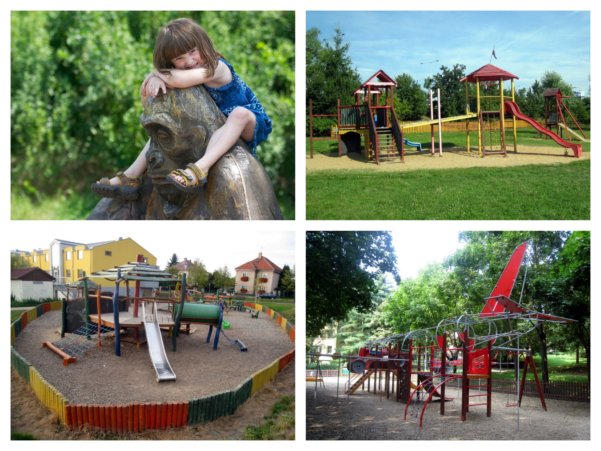

| Name |
|---|
Vítáme vás na webových stránkách, které jsme vytvořili jako podporu a doplnění pro aplikaci, která mapuje atraktivní dětská hřiště v Praze.
Na projektu jsme začali pracovat před dvěma lety. Nejprve jsme oslovili úřady všech městských částí s prosbou, aby nám pomohly vybrat nejzajímavější dětská hřiště v jejich katastru. Musíme ocenit, že nám byly nápomocny všechny radnice, bez výjimky. Poté jsme prošli dostupné internetové projekty podobného zaměření, abychom si ověřili, že jsme žádné pěkné hřiště neopomněli.
V průběhu roku 2013 a 2014 jsme každé z vytipovaných hřišť minimálně dvakrát navštívili, s cílem poznat jak hřiště, tak i jeho bezprostřední okolí. V roce 2015 informace průběžně aktualizujeme a přidáváme další hřiště.
V popisu jsme se zaměřili nejen na výčet atrakcí, ale také další praktické informace. Znalost okolí nám umožnila doporučit zajímavá místa, která najdete v blízkosti, jako muzea, galerie, sportoviště, naučné stezky apod. Mysleli jsme také na možnosti občerstvení. Dostupnost veřejnou dopravou odráží stav platný v srpnu 2014.
Protože se linky městské dopravy často mění, doporučujeme si před návštěvou hřišť ověřit aktuálnost spojení na stránkách Dopravního podniku: http://jrportal.dpp.cz/jrportal/
K září 2014 obsahuje přehled více než 80 lokalit s asi 150 hřišti. Pokud se totiž nedaleko od sebe nachází hřišť několik, zpracováváme je v rámci jedné lokality. V mapě a textu jsou pak kromě čísla označena také písmenem, např. 4.A a 4.B. Našim cílem nebylo popsat všechna dětská hřiště, ale pouze ta, jejichž návštěvu byste si neměli nechat ujít! Kromě textu a ikony v mapě vám hřiště přiblíží původní fotografie.
Obecně platí, že většinu hřišť lze navštívit kdykoliv. Pokud je hřiště v určitou část roku uzavřené, výslovně to uvádíme. Jestliže se hřiště na noc zamykají, od května do září se otevírají mezi osmou (častěji) a devátou hodinou. Od října do dubna pak mezi devátou (častěji) a desátou. Od května do září se hřiště zavírají ve dvacet až jednadvacet hodin, od října do dubna v sedmnáct až devatenáct hodin.
Vybavení hřišť, jejich stav i další skutečnosti v textu uváděné se mění. Pokud budete mít připomínky, doplňující informace, nebo jestliže vám ve výčtu nějaké hezké hřiště chybí, napište prosím na mail: zastupce.vasak@seznam.cz, nebo zde do fóra.
Závěrem vám přejeme, abyste na hřištích strávili s dětmi příjemné chvíle.
Přidáno - 10. 5. 2015
Přidali jsme pro vás hřiště 85.A-85.C (lokalita Prokopské a Dalejské údolí).
Přidáno - 2. 5. 2015
U všech hřišť jsme pro vás aktualizovali dostupnost veřejnou dopravou! Data jsou platná k 2. květnu 2015.
Přidáno - 27. 4. 2015
Filtry jsou z technických důvodů dočasně mimo provoz. Rozřazení hřišť do jednotlivých kategorií najdete níže:
Praha 1: 1, 3, 4.A, 4.B, 5, 21.A, 21.B, 23, 63.A, 63. B
Praha 2: 7.A, 8, 9, 10, 11.A, 80
Praha 3: 11.B, 12, 13.A, 13.B, 13.C, 14.A, 14.B, 14.C, 59.A, 59.B, 59.C, 59.D, 60.A, 60.B
Praha 4: 15, 17.A, 17.B, 73.A, 73.B, 74.A, 74.B, 77.A, 77.B, 81
Praha 5: 18, 20, 22, 41, 51, 79.A, 79.B, 85.A, 85.B, 85.C
Praha 6: 16, 24, 25. A, 25.B, 25.C, 26.A, 26.B, 45
Praha 7: 2, 6, 27.A, 27.B, 28.A, 28.B, 28.C, 28.D, 28.E, 28.F, 64
Praha 8: 29.A, 29.B, 30.A, 30.B, 31.A, 31.B, 32.A, 32.B, 49, 50, 58
Praha 9: 34, 35.A, 35.B
Praha 10: 7.B, 33, 36, 37.A, 37.B, 37.C, 67, 68, 69, 71
Praha 11: 38.A, 38.B, 55, 75.A, 75.B, 76
Praha 12: 39, 83
Praha 13: 40, 42.A, 42.B, 43.A, 43.B, 52.A, 52.B, 53.A, 53.B, 54
Praha 14: 72.A, 72.B
Praha 15: 44.A, 44.B, 56.A, 56.B, 57, 65.A, 65.B, 66
Praha 16: 48.A, 48.B, 48.C, 84.A, 84. B
Praha 17: 19, 78
Praha 18: 46
Praha 19: 70
Praha 20: 62.A, 62.B
Praha 21: 47.A, 47.B, 61
Praha 22: 82.A, 82.B, 82.C
Plocha pro míčové hry: 2, 3, 4.A, 4.B, 6, 7.A, 8, 11.B, 16, 17.B, 18, 20, 25.C, 26.A, 28.F, 31.A, 35.B, 36, 37.C, 38.A, 39, 40, 41, 42.A, 42.B, 44.A, 45, 46, 48.A, 52.A, 53.A, 53.B, 54, 57, 58, 61, 67, 72.B, 75.A, 75.B, 77.B, 80, 82.A, 83, 84.A
In line stezky, skate parky, BMX areály, dopravní hřiště: 15, 17.A, 17.B, 19, 25.C, 26.A, 26.B, 37.B, 40, 59.A, 59.B, 59.C, 59.D, 61, 64, 70, 80, 81, 83
Jiné sporty (lanová centra, minigolf, discgolf, boby): 34, 35.A, 35.B, 36, 40, 56.B, 57, 60.A, 64, 76, 81, 83
Fitness prvky: 2, 3, 11.B, 13.C, 16, 17.B, 22, 26.A, 26.B, 28.D, 28.E, 30.B, 33, 35.B, 40, 48.C, 56.B, 62.A, 72.A, 76, 78, 82.C, 83
Bazény, vodní atrakce, vodní soustavy: 11.B, 12, 14.A, 17.B, 33, 34, 35.A, 36, 37.B, 40, 46, 50, 56.B, 58, 60.A, 70
Voda na hřišti nebo v bezprostřední blízkosti: 1, 3, 4.A, 4.B, 5, 6, 7.A, 8, 9, 10, 11.A, 11.B, 12, 13.B, 14.A, 14.B, 17.B, 20, 21.A, 23, 24, 27.A, 28.F, 33, 35.A, 36, 37.B, 39, 40, 46, 47.A, 50, 58, 59.A, 60.A, 61, 63.A, 63.B, 64, 67, 74.A, 76, 78, 79.A, 79.B, 80
WC na hřišti nebo v bezprostřední blízkosti: 1 (placené), 2, 3, 4.A, 4.B, 5, 6, 7.A, 7.B, 8, 10, 11.A, 11.B, 12, 14.A, 15, 18, 20, 21.A, 22, 23 (placené), 28.F, 33, 34, 36, 37.A, 37.B, 39, 40, 41, 46, 50, 51, 58, 59.B, 60.A, 61, 63.A (placené), 64, 67, 68, 69, 70, 74.A, 75.A, 76, 78, 79.A, 79.B, 80, 81, 85.C
Správce na hřišti: 3, 4.A, 4.B, 5, 7.A, 8, 10, 11.A, 12, 21.A, 33, 39, 40, 79.A, 79.B, 80
Částečný stín: 2, 5, 6, 7.B, 9, 10, 11.B, 12, 13.A, 13.B, 14.B, 16, 18, 19, 21.A, 25.A, 25.B, 26.B, 27.B, 28.A, 28.B, 28.C, 28.F, 30.A, 31.B, 34, 35.A, 37.A, 42.A, 43.A, 45, 46, 47.A, 47.B, 48.A, 48.B, 49, 50, 51, 59.C, 59.D, 60.A, 63.A, 64, 66, 67, 69, 71, 73.A, 73.B, 74.A, 74.B, 76, 77.B, 78, 79.B, 81, 84.B, 85.B, 85.C
Kultura (muzea, galerie, venkovní sochy, divadla, planetária): 3, 6, 9, 10, 13.C, 17.A, 17.B, 18, 19, 20, 21.B, 24, 27.A, 27.B, 28.A, 28.F, 30.A, 40, 45, 47.A, 50, 54, 58, 62.A, 62.B, 69, 70, 76, 79.B, 80, 82.A, 82.B
Naučné stezky: 19, 30.A, 32.A, 35.A, 49, 66, 71, 73.A, 73.B, 74.B, 85.A, 85.B
ZOO koutky: 22, 48.B, 56.A, 66, 74.A, 74.B, 84.B
Restaurace nebo kavárny v bezprostřední blízkosti: 11.B, 36, 57, 74.A, 76
...